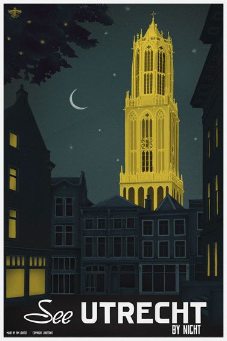

Утрехт
Утрехт может быть четвертым по величине городом в Нидерландах, когда речь заходит о размерах. Но история этого города в географическом центре Нидерландов относится к 47 году нашей эры. Это был год, когда римский император Клавдий впервые установил Утрехт, и знаменитый Домский собор города находится на том же месте, где когда-то стоял небольшой форт императора. Как католический религиозный центр Нидерландов в течение многих столетий, Утрехт является домом для более чем 19 исторических церквей. Здесь же находится и наибольшая достопримечательность Утрехта – Домский собор, 112-метровая башня которого занимает первое место среди памятников Нидерландов по своей высоте. Колокольные концерты проходят каждую субботу утром в саду монастыря возле церкви. Не менее впечатляющий ряд музеев расположен в Museumkwartier Утрехта, в то время как рестораны и магазины располагаются по обе стороны канала Oudegracht, который проходит через центр Утрехта. Утрехт также является родиной для крупнейших и старейших университетов Нидерландов. Но самым популярным местом для многих восточноевропейских туристов может быть Voordorp районный рынок подержанных автомобилей, один из крупнейших на континенте.
